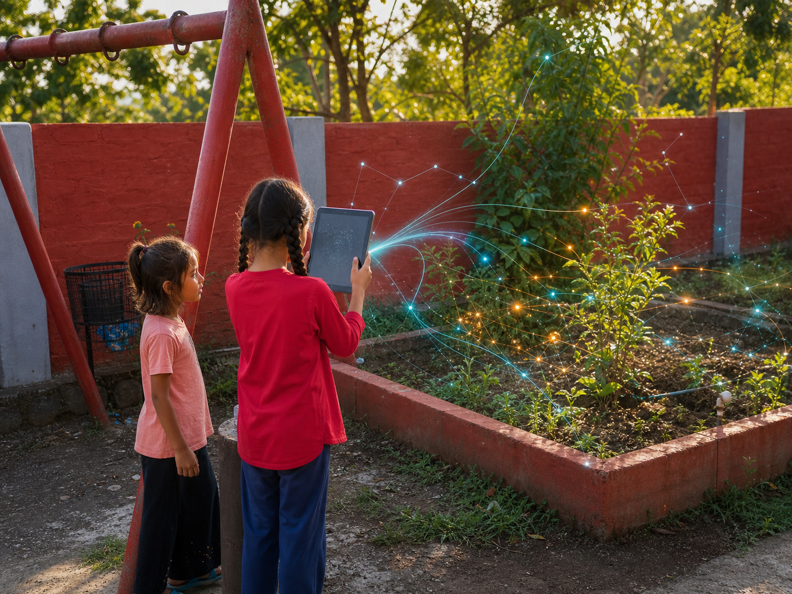
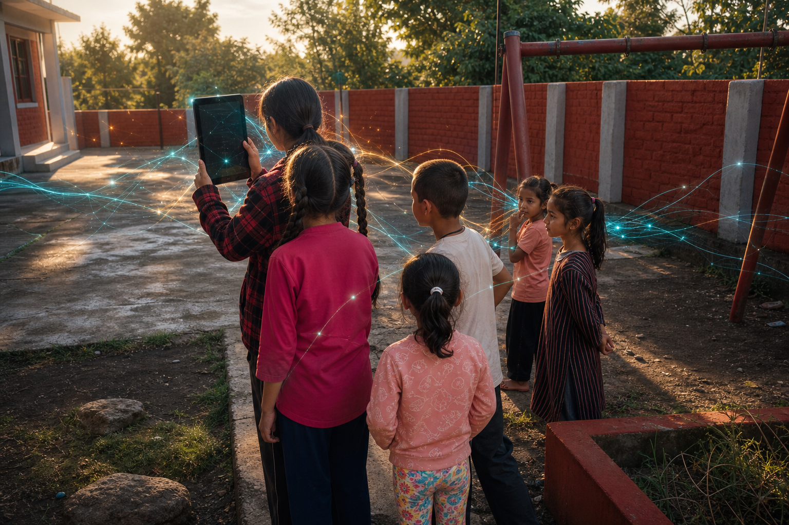
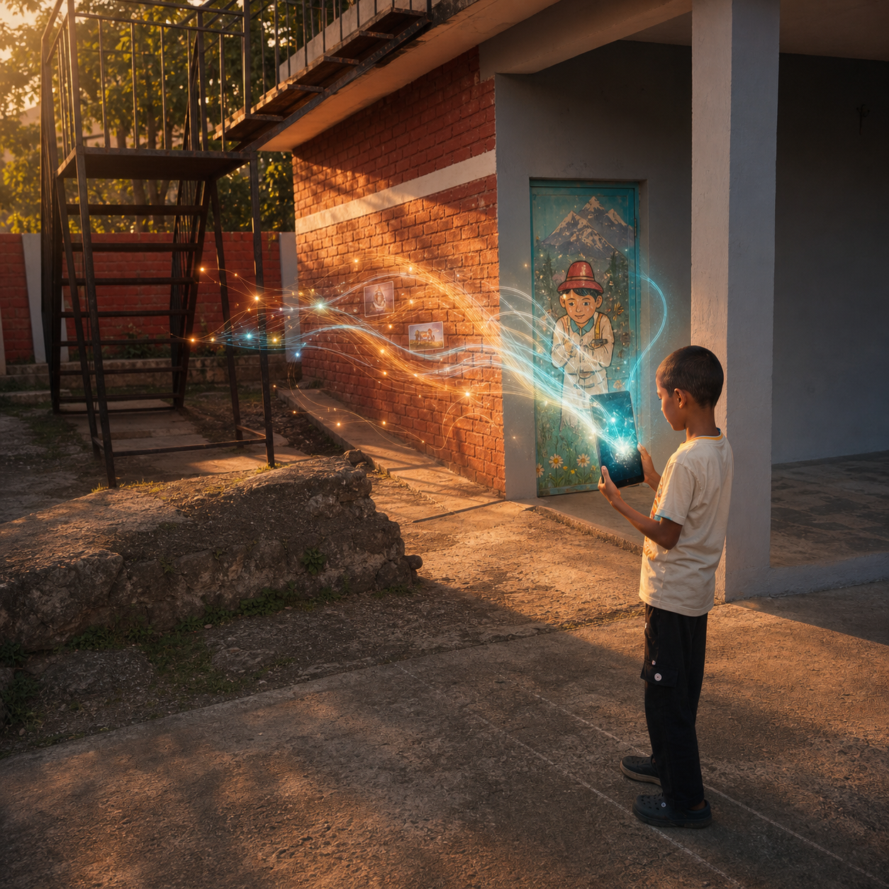
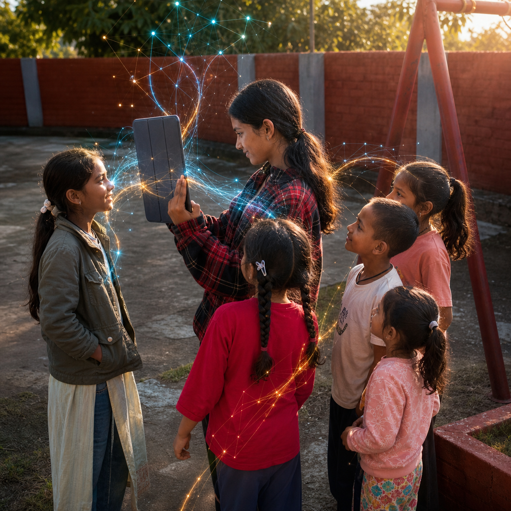
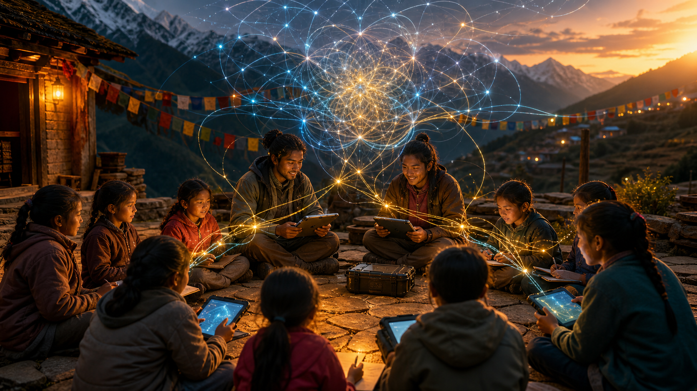
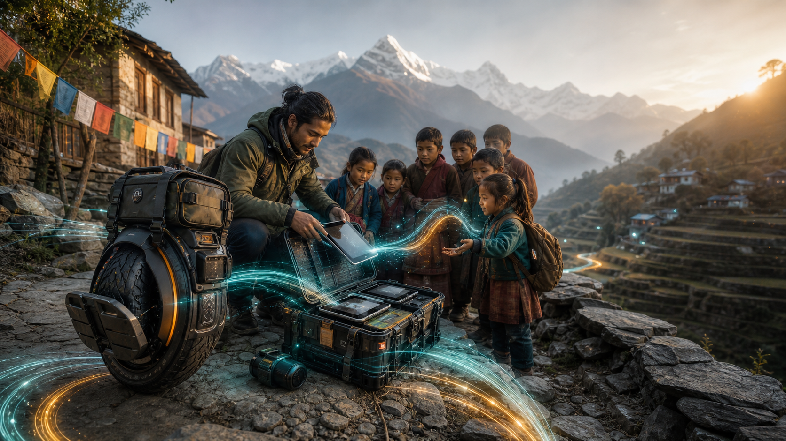

Rakkar
2 trainers and 2 tablets supporting self-practice, children’s activities, and 40-minute mindful AI literacy sessions.
Mobile AI Literacy Initiative
CyberScout carries generative AI, autonomous agents, and digital sovereignty into the high folds of the Himalayas, turning smartphones and tablets into instruments of local imagination.
Bridging Himalayan stillness with a digital pulse
CyberScout bypasses brittle infrastructure by becoming lightweight, rugged, and community-shaped. The classroom arrives as a living edge node: a mentor, a weatherproof tech pack, tablets, battery resilience, and a curriculum that treats AI as a language for thinking, preserving, making, and self-determination.
CyberScout Nodes
The first network is forming across the Dhauladhar foothills: Rakkar anchors the trainer-led pilot near Dharamshala, while Tikri Musehra adds a second tablet node near the Bir-Jogindarnagar corridor.
2 trainers and 2 tablets supporting self-practice, children’s activities, and 40-minute mindful AI literacy sessions.
2 tablets deployed with 1 local coordinator, extending CyberScout toward the Bir-Jogindarnagar learning corridor.
Two mountain nodes now form the first lightweight CyberScout mesh for local imagination, AI awareness, and digital sovereignty.
Field Gallery
Real Rakkar pilot moments, gently amplified with CyberScout signal layers: tablets, children, sunlight, questions, and a little future-magic. ✨

Children gather around the tablet as attention, questions, and AI threads begin to braid into one learning field.

A garden bed turns into a question: what can AI notice, and what can children improve with their own hands?

The tablet becomes a lens for local memory, language, imagination, and the next question waiting behind the door.

The trainer is not the source of all answers; she becomes the guide for attention, care, and shared discovery.

A visual myth for the mission: children, mentors, tablets, and signal forming a living field of possibility.

Rugged mobility, tablets, and curiosity moving into places where ordinary infrastructure cannot easily reach.
Rakkar Pilot
Trainer Guideline
The Rakkar pilot uses AI tablets for trainer growth and children’s future awareness. Trainers first use the tablet as a reflective journal, planning companion, mindfulness support, and career-path explorer. Then they facilitate short, mindful group sessions where children learn to ask better questions, create with care, and imagine a positive future for themselves and their village.
Maintain a tablet journal of insights, goals, decisions, skills, passions, and values. Use AI for mindful reflection, personal planning, and exploring future career paths where helpful.
Begin with a quiet breath, set a clear intention, then help children share devices, question outputs, and use AI for positive, constructive learning rather than passive consumption.
Run focused 40-minute sessions on a schedule that fits the children’s availability. Share bi-weekly progress, challenges, and observations with Rajanshu Ujjwal.
Teach children how to hold the tablet, keep the screen clean, share turns, and use the device carefully.
Help children recognize positive, useful information and choose good websites or applications.
Teach every child to pause and ask, “Is this true?” before believing or sharing any AI answer.
Kids Activity Plan
Photograph a part of Rakkar, such as a school or field, and ask AI how it can be improved.
Create a list of three good things the child can do for others.
Use AI to discover five facts about a future job or life path the child dreams about.
Choose a color for the child’s current feeling and write two or three words about it.
Create a short tablet video about one improvement the child wants for the village.
Ask AI for three random words and write a five-sentence story using them.
Ask one curious question, then explain the AI answer in two sentences in the child’s own language.
Ask about village history or imagine Rakkar 50 years from now and request one piece of advice.
Ask AI for two solutions to a local problem, such as saving water, and share them with the group.
Core Mechanics
A trained CyberScout moves across narrow mountain paths on an electric unicycle, carrying a deployable classroom where roads and institutions thin out.
Rugged tablets, mobile batteries, local content packs, and safe AI sandboxes create a low-latency learning surface for remote villages.
Peer circles learn by building: prompt systems, image stories, language tools, community archives, and localized agent prototypes.
Digital Sovereignty
Students learn prompts as a practical extension of observation, questioning, and creative control, not as magic commands.
Folklore, landscapes, dialects, farm wisdom, and village memory become living inputs for visual, sonic, and archival creation.
Youth and women's collectives prototype simple autonomous workflows for translation, farming logs, learning support, and digital records.
Curriculum Framework
Phase 1
Demystify neural networks, compare search with conversational AI, and practice prompt engineering as clear thinking made visible.
Pilot & Roadmap
Rakkar pilot activation with two trainers, two tablets, 40-minute sessions, and bi-weekly progress reporting.
Farm collectives and local training centers expand the curriculum for young women and grassroots innovators.
Open-source the EUC Mobile Classroom blueprint for decentralized deployment globally.
Open-source Philosophy